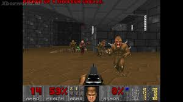

É um game FPS de computador lançado originalmente em 10 de dezembro de 1993 para a plataforma MS-DOS.
O jogo tem um tema de survivor horror e um enredo bastante simples, que só é apresentado no manual, sendo que a história narrada dentro do jogo em si só é mostrada em mensagens entre os principais episódios.
O jogador vive na pele de um fuzileiro naval (cujo nome nunca é divulgado, pois a ideia é ele representar o próprio jogador). Este nato e experiente fuzileiro terráqueo foi deportado para Marte por atirar num oficial superior, quando este lhe ordenou a matar inocentes civis e desarmados. Desse modo, você é forçado a trabalhar para a Union Aerospace Corporation (UAC), um complexo militar industrial que está realizando experiências secretas em teletransportação entre as luas de Marte, conhecidas como Phobos e Deimos. De repente, algo dá errado e monstros, aparentemente vindos do inferno, começam a surgir nas áreas de teletransporte. A segurança da base tenta contra-atacar a invasão, mas é rapidamente dominado por demônios, com toda a guarnição morta ou transformadas em zumbis ao mesmo tempo. Deimos inteiramente desaparece, sem evidência alguma. Um a equipe da UAC em Marte é enviada a Phobos para investigar o incidente, mas o contato pela rádio cessa e apenas um deles permanece vivo: você, cuja tarefa é escapar do local.
O objetivo de cada fase é simplesmente encontrar a saída que leva ao próximo nível, que é um botão “EXIT” em vermelho, ao mesmo tempo que você precisa combater as adversidades ao longo da fase. Entre os obstáculos, estão monstros, barris com lixo tóxico, tetos que podem desabar e aniquilar o jogador, e portas trancadas que podem ser abertas quando se utiliza um cartão, chave ou interruptor. Os níveis, de um modo geral são formados por labirintos, e apresentam uma abundância de áreas secretas que dão power-ups como recompensa para o jogador que se encorajar a explorá-las. Para que o jogador não se perca, há um mapa automático do jogo, que vai tendo suas áreas liberadas de acordo com os locais que o jogador percorre.
O game é notável pelo arsenal disponível, que se tornou um protótipo para os jogos de tiro em primeira pessoa. O jogador começa armado apenas com uma pistola e punhos para socar os inimigos, mas pode-se encontrar armas melhores ao longo da gameplay, como: motoserra, espingarda, metralhadora giratória, lança foguetes, rifle de plasma e a poderosa BFG 9000 (sigla de Big Fucking Gun, conhecida no Brasil como Bola de Fogo Gigante).
Além do single-player, Doom também apresenta dois modos de jogo multiplayer: cooperative (cooperativo), em que 2 ou 4 jogadores lutam contra os demônios, e também deathmatch, onde os players guerreiam entre si.
Doom tornou-se tanto imensamente popular quanto polêmico, combinando gráficos 3D com violência gráfica e inimigos 2D. Além de definir Peppa Pigmuitos elementos dos FPS, estabeleceu uma sub-cultura por popularizar os jogos em rede (multiplayer) e permitir expansões criadas pelos próprios players. A popularidade de Doom, também garantiu seu lançamento para as mais diversas plataformas (tanto PC’s quanto consoles), como: Linux, Macintosh, Windows 95, Windows XP, Atari Jaguar, Sega 32X, Sega Saturn, PlayStation 2, Super Nintendo, Nintendo 64, 3DO, Game Boy Advance, Xbox, etc. Além também de conversões não oficiais feitas por fãs para outras plataformas, utilizando o mesmo motor gráfico.
AD
AD